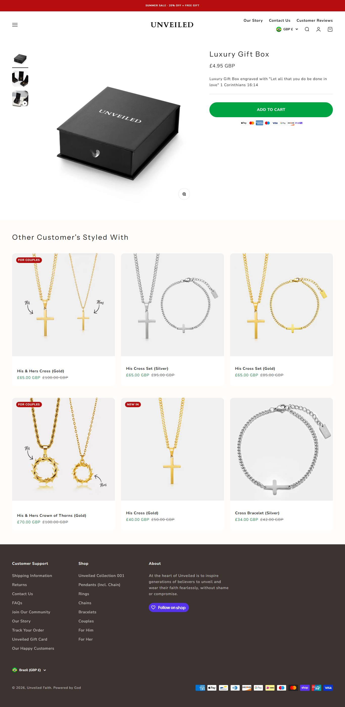

Fonte: primeiro item do catálogo (proxy, coleção de best sellers não é pública).
Mediana do catálogo: $45.0 · faixa $4.95 a $150.0
| # | Produto | Preço |
|---|---|---|
| 1 | Luxury Gift Box | $4.95 |
| 2 | Purity Cross (Gold) | $52.0 |
| 3 | Purity Cross (Silver) | $52.0 |
| 4 | Redemption Stone Cross (Gold) | $53.0 |
| 5 | Redemption Stone Cross (Silver) | $53.0 |
| 6 | His & Hers Cross (Silver) | $65.0 |
| 7 | His & Hers Cross (Gold) | $65.0 |
| 8 | Her Cross (Gold) | $40.0 |
| Criativos únicos (amostra de 50 mais recentes) | 5 |
| Fator de duplicação | 10.0x (mesmo criativo repetido) |
| Anúncios por dia | 9.9/dia · ~69.3/semana |
| Criativos únicos por semana | 6.9 |
| Janela da amostra | 5.06 dias |
| Headline |
|---|
| "Bundle & save. Wear your faith as a set, not separately." |
| "Two rings. One faith. His & Hers, made to match." |
| "🙌 Worn By Over 8000+ believers" |
| "10,000+ believers. One mission." |
O que faz o campeão vender, decodificado dos criativos e da PDP: é isto que se copia, não o número de anúncios.
| Big idea / ângulo | Use a sua fé como um conjunto, não como peças soltas. |
| Mecanismo único | Bundle como identidade de marca (par His & Hers, "wear as a set"). Eleva o AOV sem parecer liquidação, que é o erro do resto do nicho. |
| Formato de hook | "Bundle & save. Wear your faith as a set, not separately." + prova social escalando ("10,000+ believers"). |
| Estrutura do presell | Catálogo dinâmico (DPA) gerando variação automática, com contagem de believers crescente como validação social. |
| Objeção principal | "Vale o preço premium britânico?" Respondida com "designed in the UK" e o número de believers como pertencimento. |
Widget detectado: judge.me. Ele não expõe o aggregateRating no HTML da página, então a contagem pública não saiu por raspagem.
Transparência sobre os limites desta ficha. Cada linha mostra o que faltou, por quê, e o que foi tentado.
| Dado | Motivo | Método tentado |
|---|---|---|
| Visitas mensais (SimilarWeb) | domínio abaixo do limiar de medição do SimilarWeb | Navegador real (Playwright) com pausas longas. Operações pequenas e recentes não entram no SimilarWeb; o Tranco confirma tráfego abaixo do limiar. Impacto: faturamento estimado só por proxy de anúncios. |
| Contagem de reviews | widget não expõe aggregateRating no HTML | JSON-LD e widgets (Loox/Judge.me/Okendo). Apps detectados: judge.me. A contagem só sai inspecionando a chamada XHR da PDP com navegador logado. |
| Pixel ID da Meta | não encontrado no HTML da home | Regex no HTML. O pixel é carregado via GTM ou via Customer Events do Shopify, que não expõe o ID no fonte. |
| Redes sociais | nenhum perfil linkado no site | Varredura de links do rodapé. A ausência é dado: indica operação 100% tráfego pago. |
| Eixo | Pontos | Por quê |
|---|---|---|
| Sourcing simples | 2/2 | catálogo enxuto com DPA |
| Ticket fecha sem escada | 1/2 | bundle é o mecanismo de AOV |
| Criativo simples de produzir | 2/2 | DPA gera criativo automático |
| Mecanismo com urgência | 1/2 | bundle "wear as a set" é identidade, não urgência |
| Investimento de entrada baixo | 1/2 | ticket £, Triple Whale, mercado UK |
| Sem dependência de autoridade | 1/2 | bundle começa a depender de branding |
Nível é etiqueta de "pra quem serve", não nota de corte: 10-12 iniciante, 6-9 médio, 0-5 avançado. Toda oportunidade de dropshipping vale, muda só o perfil de operador.
Marca britanica premium, "designed in the UK". Unica do grupo que vende BUNDLE como conceito de marca ("use sua fe como um conjunto") em vez de desconto puro. Tem Triple Whale instalado, marcador de porte. A amostra revela que 46 dos 50 anuncios mais recentes subiram num unico batch de catalogo dinamico (DPA), entao a duplicacao vem do catalogo, nao de teste manual. Prova social escalando de 8.000 para 10.000 believers entre criativos.